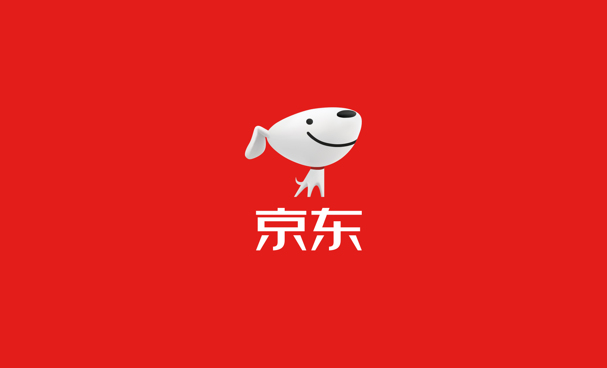
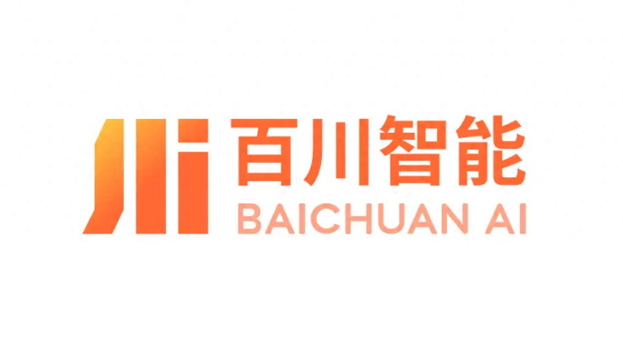

AI 产品经理，曾在不同公司探索 AI 与业务、用户痛点融合的场景，参与模型能力优化到产品落地的全流程设计与迭代，职责覆盖需求洞察、功能规划、数据与评估机制设计，并与工程和算法团队协同落地。
你好，我是：
白星月
Exploring AI is about building with it
你好，我是：
Exploring AI is about building with it
About
AI 产品经理，曾在不同公司探索 AI 与业务、用户痛点融合的场景，参与模型能力优化到产品落地的全流程设计与迭代，职责覆盖需求洞察、功能规划、数据与评估机制设计，并与工程和算法团队协同落地。
Experience
非典型文科生的职业探索：扎根问题发现，从AI迈向无限未来


